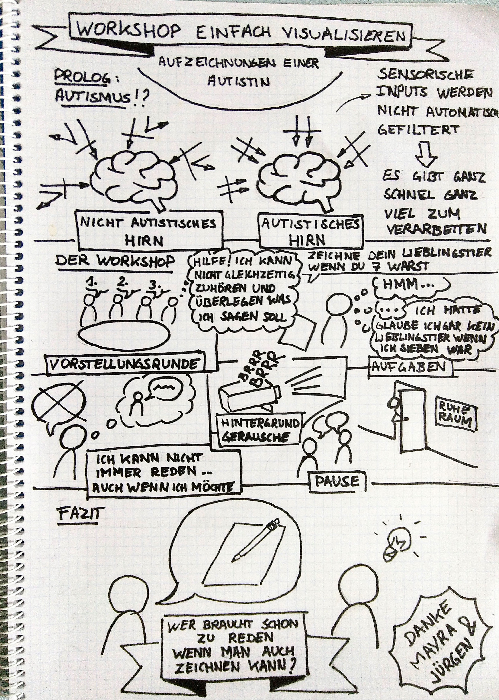
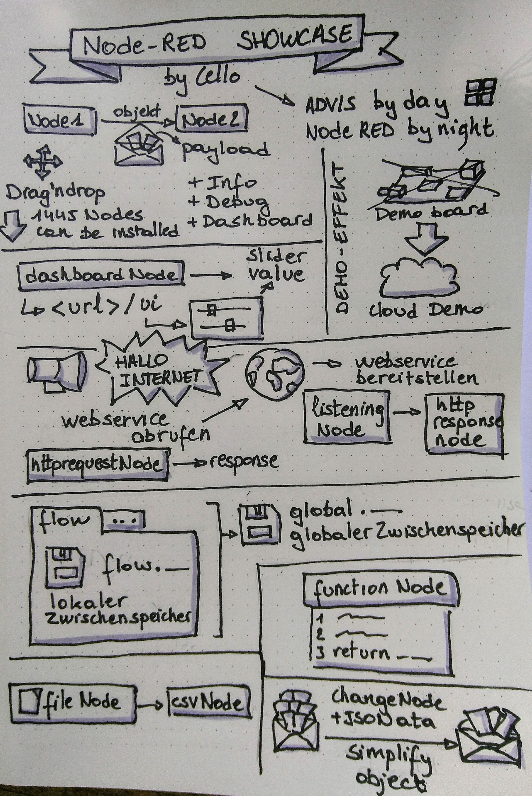
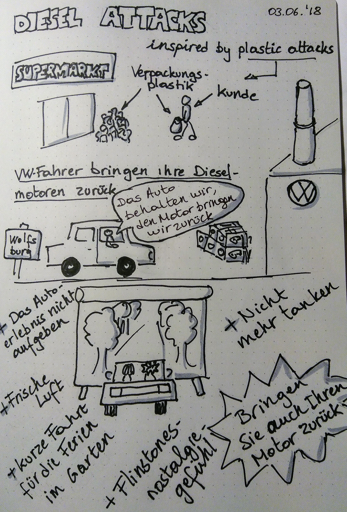
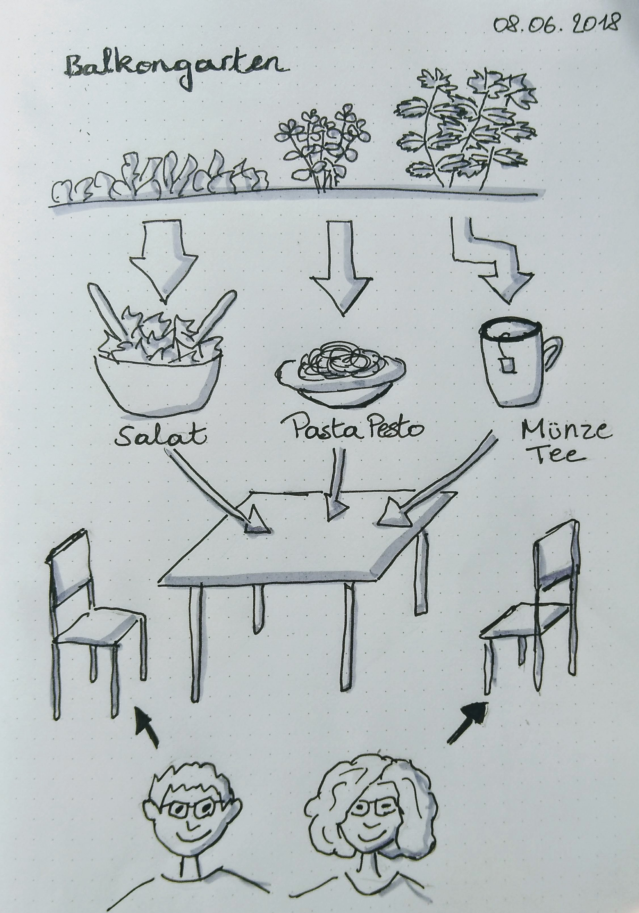
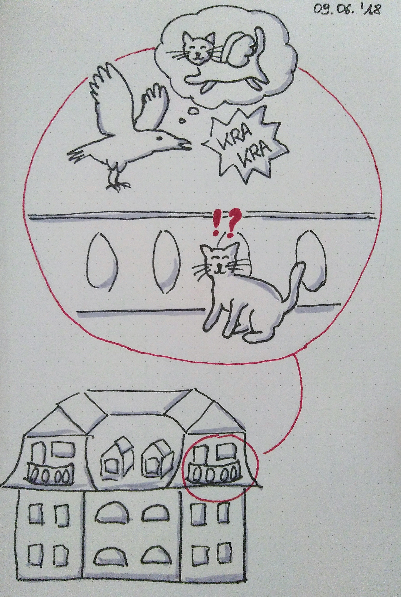
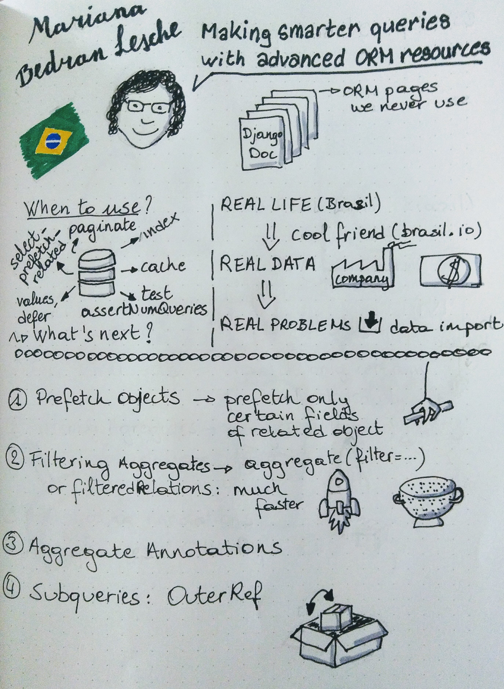
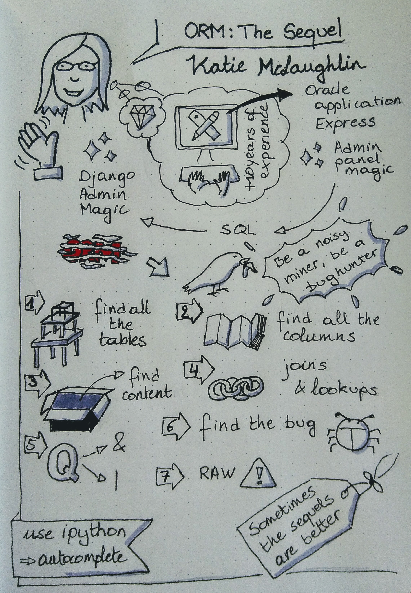
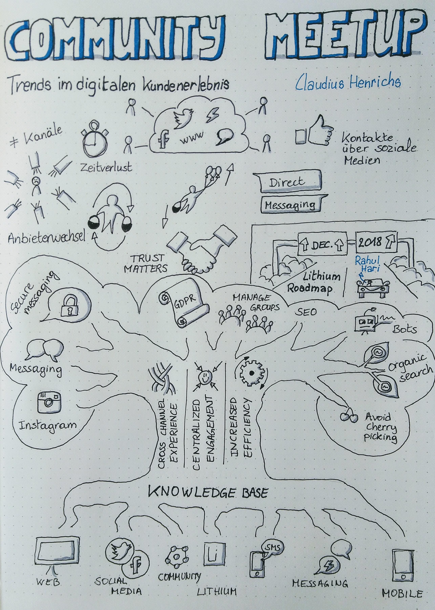
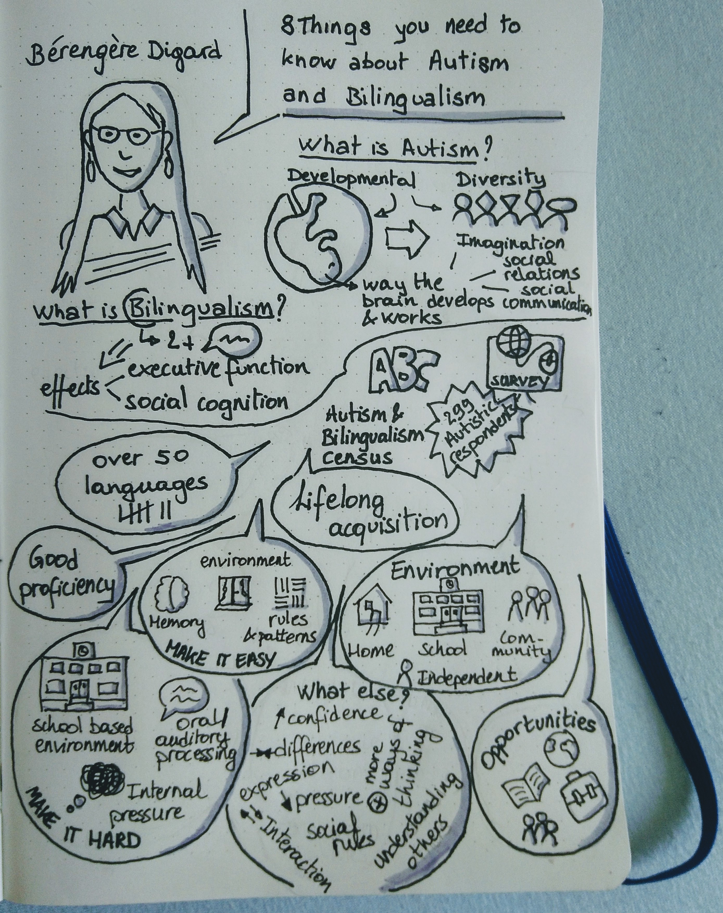

One and a half month into a new hobby: 10 sketchnotes
It was an overwhelming start, almost 2 months ago. The workshop took place in a room I don’t know, with half of the people I had never seen before. It lasted a whole afternoon and included a fair bit of talking (which I mainly skipped). It was so hard I didn’t have the resources to get home on my own anymore once it was over.

But it was also a foolish love at first sight. I call it foolish, because I am not at all artistic. But that same evening (yes, that same evening I had to take a cab home because I was exhausted.) I drew a sketchnote about how I experienced the workshop. The next day I bought a notebook and some pens. A week later a differently sized notebook and more pens. I ordered some books and decided to draw something each day. And now, one and a half month later, I can look back and say that I missed only 7 days.
I don’t draw full sketchnotes each day. Some days what I draw is ugly, small, or without inspiration. But other days I draw things I am kind of proud of, I listen to a talk in real life or on youtube, and make a full featured sketchnote, I draw thoughts, things I did, or recipes. It is those sketchnotes I want to show you in this article.
1. Sunday walk
Well, it was actually on this year’s beautiful whit monday that I made this walk with my boyfriend not far from where I live. We had the view of the alps, and of a lake at some points, and geeked out about the observatory (which was closed but still interesting). Back home with tired legs, I surprised myself by drawing this walk in a way that brings back its memories and makes me smile.

2. My first live talk
I can’t often go to meetups or the like. By that time of the day my batteries are long empty, and there is no way I can manage the socializing part anymore. Luckily we have something calles learning lunch at work, and so I still get the chance to try my hand at live talk sketchnoting.
Live is a bit of a euphimism though. I tend to live sketch with pencil, then postprocess with pencil, and only after that put on the permanent ink. The whole postprocessing takes longer than the actual talk. But in the end I am happy with the result, and that is what counts.

3. Joking about the news
This day, plastic attacks were on the news, as was, again, dieselgate. So in my head the two combined and I imagined people bringing their engine back to VW, but keeping the car and use it for more careless activities.

4. The sheer happyness brought by a balcony garden
Our balcony garden is small but exquisite. It has no flowers, only food. It can only feed us occasionally, but when it does, it is such a delight.

5. More things happening on our balcony
Our cat went on the balcony and got in a territory war with a crow. The cawing was incredibly loud, so we quickly took the cat inside. But a couple of days later, with the cat downstairs in the garden, we heard the cawing again, and again it was directed to our cat. Resentful craw…

6 & 7. Drawing talks off of youtube, Django edition
I couldn’t go to Djangocon Europe this year, but luckily talks are recorded. And my new hobby is the perfect excuse to take the time and watch some of them.
When drawing youtube talks, I do only one round of postprocessing, but I must admit that I have paused videos occasionally as well.
 
8. Another live talk
This one was an almost disaster, but then magic happened. It was the keynote talk(s) of the Lithium community meetup that happened at my workplace. At first I barely managed to get anything structural on paper. I had little doodles of small parts of the talk, but there was little or no cohesion. I almost wanted to give up, but than I saw it could be a tree. The tree metapher fitted the context too, so I carried on hanging my little doodles on roots and branches.

After the talk was done I had a very messy tree, standing upside down (as speakers tend to go from root to branch in their explanations). So again postprocessing saved me. And it turned out to be of the notes I am most proud of.
9. Let there be cookies
I saw a recipe sketchnote on Instagram and it was definitely something I wanted to try as well. Only a couple of days later I ended up making chocolate chip cookies for one of my “I am not good with words, can I give you home made sweets instead?” actions. Perfect timing…

10. Drawing talks off of youtube, Polyglot edition
I had watched Bérengères talk from the 2017 Polyglot Conference the moment it came online, and was impressed by the way she handled the questions. Also her efforts of really connecting to autistic people make her research more interesting to me. So drawing a sketchnote was a good excuse to watch her talk again, and to let her know she is doing a great job.

Categories: DIY